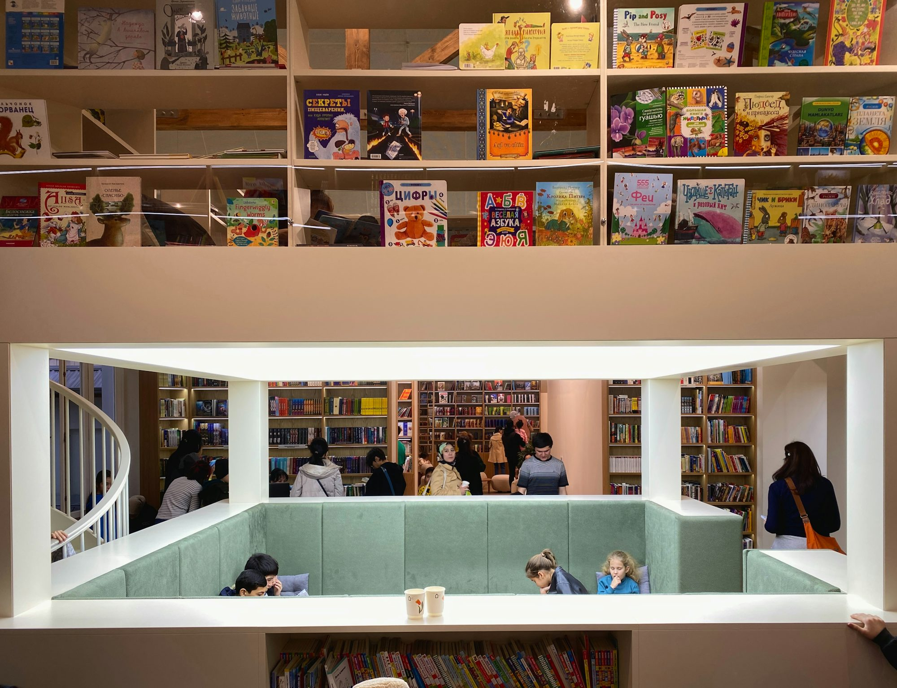

stuvion.shop
This article Training Certification Writing explores Academic the Reading Curriculum Teaching significance Study Teaching Literacy of multicultural education, Innovation highlighting Academic Training Certification its benefits for fostering inclusivity, Research Study empathy, Skills Writing Learning Skills and Knowledge Knowledge Examination global Innovation awareness Learning Literacy Curriculum Research among Reading students. ExaminationMulticultural education aims to provide all students with a rich understanding of various cultures, perspectives, and histories. By integrating diverse content into the curriculum, educators help students recognize the value of different backgrounds and experiences. This approach not only enriches students' learning but also Training Knowledge prepares Academic them Academic to thrive in a multicultural society.
One of the primary benefits of multicultural education is the promotion of inclusivity. When students see their cultures and experiences reflected in the curriculum, they feel valued and understood. This sense of belonging is crucial for fostering a positive learning environment. Educators can create inclusive classrooms by incorporating literature, art, and history from diverse cultures, allowing students to engage with material that resonates with them personally.
Moreover, multicultural education fosters empathy among students. By exploring the stories and experiences of individuals from different backgrounds, students learn to appreciate the struggles and triumphs of others. This empathy is vital in combating stereotypes and prejudices, helping to create a more respectful and compassionate Study school community. Skills Through discussions and activities centered on diverse perspectives, students can develop a deeper understanding of social issues and Study Reading learn to advocate for inclusivity.
Additionally, multicultural education enhances critical thinking skills. Students are encouraged to analyze and compare different cultural perspectives, fostering a more nuanced understanding of complex issues. For example, when studying historical events, students can examine how different cultures perceive and interpret those events. This analytical approach helps students recognize Learning that history is not a singular narrative but a tapestry of diverse experiences and viewpoints.
To effectively implement multicultural education, educators can employ various strategies. One effective approach is to incorporate culturally relevant materials into the curriculum. Texts, films, and resources that represent diverse voices can provide students with a broader understanding of the world. For instance, literature from various cultural backgrounds can spark meaningful discussions about identity, values, and societal norms.
Collaborative projects are Training another powerful method for promoting multicultural education. By working together on projects that explore different Reading cultures, students can share their own experiences and learn from one another. This collaboration fosters teamwork and communication skills while deepening students' appreciation for diversity. For example, students might create presentations or exhibitions showcasing different cultural traditions, allowing them to engage actively with the material.
Professional development for educators is also crucial in implementing multicultural education effectively. Teachers should receive training on cultural competency and strategies for creating inclusive classrooms. This training equips educators with the knowledge and skills to address diverse learning needs and promote a respectful environment. Schools can offer workshops and resources that support educators in their efforts to embrace diversity in their teaching practices.
Furthermore, involving families and the community Innovation in multicultural education can enhance students' learning experiences. Schools can organize cultural events, workshops, or guest speaker sessions that celebrate diversity and encourage community participation. By fostering partnerships with families, educators can create a collaborative environment where students feel supported in their cultural identities. Engaging families in discussions about cultural traditions and values helps bridge the gap between home and school, promoting a more holistic approach to education.
Challenges may arise when implementing multicultural Learning education, particularly in regions with less diversity. Educators might encounter resistance from stakeholders who believe that a focus on multiculturalism detracts from traditional curricula. To address these concerns, educators can emphasize the relevance of multicultural education in preparing students for a globalized world. By demonstrating how cultural understanding enhances students' academic and social skills, teachers can garner support for multicultural initiatives.
Additionally, teachers should strive to create a safe space for discussions about diversity and social justice. Encouraging open dialogue allows students to voice their thoughts and feelings Innovation about cultural issues, fostering an atmosphere of respect and understanding. Educators can guide these discussions by establishing ground rules that promote active listening and empathy. This supportive environment enables students to engage in difficult conversations about identity, privilege, and inequality.
In conclusion, multicultural education is essential for fostering inclusivity, empathy, and critical thinking among students. By embracing diversity in the classroom, educators prepare students to navigate an increasingly Knowledge interconnected world. Through culturally relevant materials, collaborative projects, and community engagement, schools can create a rich learning environment that celebrates diversity. As we move forward, prioritizing multicultural education will empower future generations to be compassionate, informed, and engaged citizens who contribute positively to society.